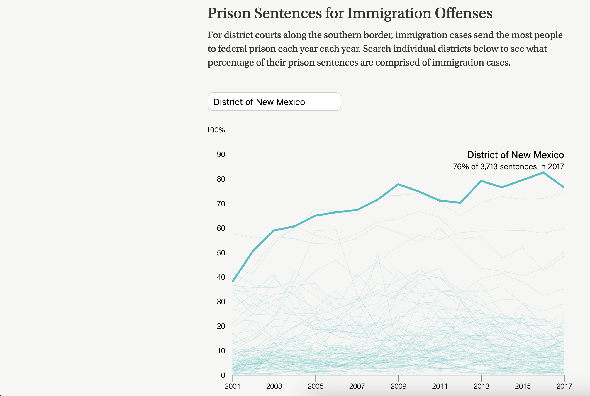

Yoli Martinez
frontend and data viz engineer
Hi, I'm an engineer building newsroom products for national and local outlets. I was most recently at The Washington Post, building AI-based tools for reporters. I've worked in a variety of newsrooms and also taught coding at the UC Berkeley Graduate School of Journalism. My super power is being able to communicate across teams, from technical experts to beat reporters. I care deepy about building ethical tools, making information easy to access and working with good folks.
I'm available for freelance, contract and project-based work. Reach out and let's talk about design and development for your investigations, newsroom tools or other frontend needs. Send me a note at yoli [dot] martinez07 [at] gmail [dot] com, schedule some time to chat via my Calendly or check out my LinkedIn.
I am also excited to be part of the 2026 NAHJ Adelante Leadership Academy. I plan to share more about my fellowship project here, so stayed tuned!
select projects
The Marshall Project

A Justice Department memo calling for an increase in immigration prosecutions along the border had framed the policy as a significant change, but data showed that these offenses were already a vast majority of prison sentences. I wrote about the process of cleaning, analyzing and visualizing the data for OpenNews' Source.
Reporting | D3 | ai2html | Data wrangling
other work
Lecturer
For three years I co-taught an intro to coding class at the UC Berkeley Graduate School of Journalism. Over a 16-week course, students learned about accessibility, design, HTML, CSS and JavaScript. It's one of the most fulfilling jobs I've had, being able to see a new crop of coder-journalists who are thoughtful, push boundaries and demand accountability. Some of my thoughts upon joining were shared in an Alumni Portrait.
Conference Presenter and Organizer
I've led conversations and hands-on trainings at NICAR, SRCCON, NAHJ and EIJ. I'm particularly proud of a 9 a.m. Excel session featuring pivot tables. In 2020, I was a Curriculum Co-Chair working for the first virtual NAHJ/NABJ joint conference. The following year I took on the role of NAHJ Conference Chair, recruiting over a dozen industry leaders to create a training curriculum for the month-long virtual conference. The work was featured in an article for Latino Reporter, the conference student newsroom.